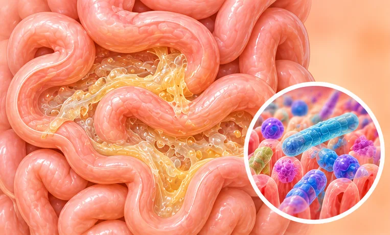

轮状病毒性肠炎
由轮状病毒引起的肠胃感染，会呕吐和水样腹泻
这是什么
病毒感染肠道，引起呕吐、水样腹泻和发烧。最常见于婴幼儿，而且很容易传开。
- 胃和肠道
- 多见于婴幼儿
- 呕吐和水样便
- 就诊科室
- 家庭医生；儿童看儿科医生
- 多发人群
- 婴幼儿；照顾他们的成年人也可能感染
- 传染性
- 会，通过脏手、食物、水和孩子接触过的东西传播
- 病程
- 休息并补充水分，通常大约一周内好转
常见表现

腹泻腹泻 
恶心想吐恶心 
发烧发热 
腹部绞痛腹部绞痛 
没有胃口食欲减退
为什么会这样
人多的地方与飞沫飞沫传播
其他原因
- 从别人身上感染轮状病毒
- 摸了脏的表面或玩具后再碰嘴巴
- 上厕所或换尿布后没洗手
出现这些情况请先看医生
- 婴儿或孩子非常嗜睡、软绵绵、叫不醒或抽搐：立即去医院
- 脱水迹象：口很干、没有眼泪、眼窝凹陷、尿很少或没有尿
- 大便带血，或呕吐物呈绿色
- 高烧，或发烧持续好几天
- 什么水分都喝不下，或剧烈腹痛；婴儿和年长者应尽快就医
如果有以上情况，请先看医生，再来做调理。
本页只是一般性的健康资讯。请继续按时服用平常的药物，并继续看医生。
请继续日常治疗
请继续按医嘱服药，并按时复诊。我们的调理是温和的辅助，不能代替医疗。
日常护理

多喝水充足补水 
好好休息休息 
勤洗手手卫生 
按建议接种疫苗疫苗接种
更多自我照顾的方法
- 婴儿按医生的建议继续喂母乳或喂奶
告诉理疗师
- 发烧或正在感染
- 怀孕
- 肾脏或肝脏疾病
调理师会在开始前和你确认这一项。
常见问题
轮状病毒性肠炎是什么？
由轮状病毒引起的肠胃感染，会呕吐和水样腹泻。病毒感染肠道，引起呕吐、水样腹泻和发烧。最常见于婴幼儿，而且很容易传开。
轮状病毒性肠炎有哪些常见表现？
腹泻；恶心想吐；发烧；腹部绞痛；没有胃口
为什么会有轮状病毒性肠炎？
人多的地方与飞沫
有轮状病毒性肠炎要怎么照顾自己？
多喝水；好好休息；勤洗手；按建议接种疫苗
AI Body Master 的调理对轮状病毒性肠炎有帮助吗？
调理是温和的无针经络养生辅助，不能治疗或治愈轮状病毒性肠炎，也不能代替药物或医生。开始前请告诉理疗师。
相关疾病
参考资料: General information based on public health sources such as Mayo Clinic, NHS, Cleveland Clinic and NCBI StatPearls.
页面更新: 2026-11-01